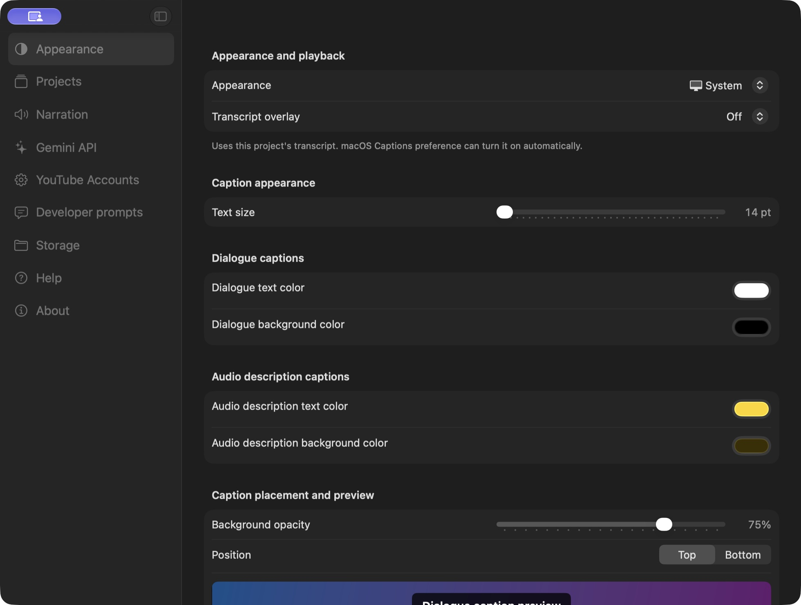
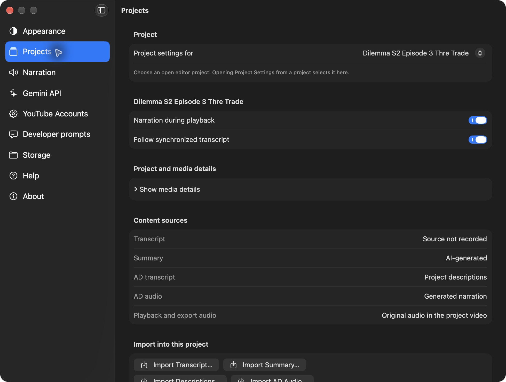
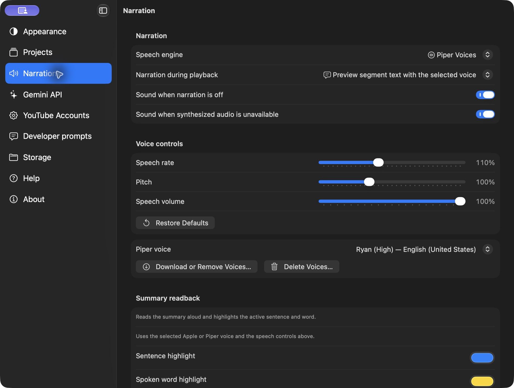

Open File > Settings (also VidiStudio > Settings on Mac) or press Command-Comma (Mac) / Ctrl-Comma (Windows). On both Mac and Windows, Settings apply and save automatically. Close the window using its normal close control (or Alt-F4 on Windows); there are no Save settings or Cancel footer buttons, and closing does not undo changes. Appearance and caption changes update open project windows. Windows saves text edits after a brief pause and flushes pending changes when you leave or close Settings. If saving fails, a short error keeps the changes pending for retry and prevents closing until they can be saved. Gemini, Sarvam and ElevenLabs API keys remain in the system credential store, outside settings JSON. Project changes, completed imports, account actions, and voice downloads or removals also apply immediately. Segment editing still uses Save Segment to commit its draft.

Appearance: System follows macOS appearance; Light and Dark select that appearance for VidiStudio.
Transcript overlay: Off hides VidiStudio's overlay, Transcript shows timed dialogue, and AD Transcript shows dialogue plus identified audio-description text. The choice applies to local and YouTube previews. In an editor, the toolbar and Playback menu expose these modes only on Transcript, Descriptions, and AD Transcript. On YouTube, the overlay remains separate from the site's own captions and transcript and does not take focus from its player shortcuts.
Caption appearance: Dialogue captions and audio-description captions have separate text and background color controls, making AD passages visibly distinct during playback. Shared text size, background opacity, and top/bottom position update the two-row preview immediately. They also update open project windows automatically on both desktops. These choices also style future open-caption video exports. Restore Caption Defaults resets only these appearance controls.
Developer mode: Off by default. Turning it on reveals Open Project Configuration in project menus and the inspector, Developer prompts in the Settings sidebar, the optional executable-path overrides in Narration (Windows SAPI host) and Storage (Python, FFmpeg, and FFprobe), and the legacy File Explorer context-menu repair action on Windows. Turning it off hides those controls while keeping saved prompt edits and paths.
On Mac and Windows, Settings closes automatically when the last main app window closes. It stays open while another All Projects or project editor window remains open, including a minimized window. Pending preferences use the normal save-on-close path. Closing a single editor does not close Settings if another main window is still open.
Every matching occurrence is highlighted in Transcript, Summary, Descriptions and AD Transcript, including saved versions and drafts. In Settings > Appearance > Search highlighting, Highlight search matches defaults on and Search highlight color defaults to yellow (#FFD60A). A live preview below Search highlight color shows both occurrences of “person” using the chosen color and readable contrasting text. It updates immediately when the color or Highlight search matches switch changes; with the switch off, the sample remains visible without highlighting. The switch and color changes also update open results automatically. Turning highlighting off keeps the chosen color and does not change the query or matching rows. Only the search phrase is highlighted, excluding a Tr:, Sum:, Des: or ADT: prefix. Highlighting is display-only and does not change saved text or exports. These preferences apply across projects on this device.
Restore Highlight Defaults appears below the search highlight preview and resets summary sentence, summary word and search highlighting together: all three switches turn on and all three colors return to their defaults. Caption appearance and other preferences are retained. The button and its context-menu command use the same action.
Use the switch’s context menu for the same checked Highlight search matches choice. The color control’s Search Highlight Color… context-menu command opens the same native color picker. Highlight text uses black or white for contrast against the chosen background.

Each open project is listed by name. Narration during playback enables or disables its descriptions in the player. Follow synchronized transcript automatically scrolls to active dialogue or descriptions. Both mirror the editor buttons and persist for that project on this Mac. Closing a project removes its visible entry; reopening restores its choices.
On Mac and Windows, open Settings > Appearance > Summary readback. Highlight the spoken sentence and Highlight the spoken word independently control the backgrounds shown while reading a summary. Both default to on; existing saved choices and colors are preserved. Turn either off to hide that highlight, or turn both off to read without highlighting. Word highlighting works even when sentence highlighting is off. Changing these choices updates open summary views without stopping speech or moving the reading position.
Use the sentence and word color controls to choose their colors. Turning a highlight off keeps its saved color. Each toggle’s context menu offers the same checked choice. Restore Highlight Defaults is below Search highlighting. It enables all three summary/search highlight switches and restores all three default colors; its context menu runs the same reset. These settings apply across projects on this device and are no longer in Narration.

Mac and Windows show Speech engine and Narration during playback first, followed by the same four sound switches and Play/Pause previews. Voice controls groups Speech rate, Pitch, Speech volume, and Restore Defaults. All three reset to 100%. Voices follow. Summary readback highlighting is in Appearance on both desktops. Settings scrolls to reach the lower groups. Mac system voices use the inline Apple voice browser; Windows uses its OneCore/SAPI voice picker, and Piper voice management remains available through Download or remove voices. Voice-engine names and operating-system voice settings differ by platform.
Windows Settings uses compact grouped sections throughout Appearance, Projects, Narration, Gemini, YouTube Accounts, Developer prompts, Storage, Help and About. Labels and fields share a row at normal widths, and related action buttons sit beside each other when space permits. Narrow windows reflow controls and actions; all pages remain scrollable. Multiline developer prompts keep full-width editors. Help includes the shortcut reference and Open the full Help book. Platform-specific voice, media-tool and licensing details remain available.
Each of the four sound settings in Settings > Narration has an adjacent play icon on Mac and Windows: narration off uses Boink3.wav, unavailable synthesized audio uses ascend.wav, export completion uses descend.wav, and timing validation uses Buzzer1.wav. Choose the icon to hear that sound even when its toggle is off. While the preview plays, the icon and its accessible name change to Pause sound: [setting name]. Choose Pause to keep the current position, then Play to resume. When playback finishes, the button automatically returns to Play. Starting another preview stops the previous one; leaving Narration or closing Settings stops it. Each row’s context menu contains the checked setting and the same Play/Pause preview action. Previewing never changes the toggle or adds audio to a project or export. All four sounds are bundled and work offline.
Local voice controls are shown for Apple Voices and Piper Voices. Selecting Gemini Voices, Sarvam Voices or ElevenLabs Voices automatically chooses Play synthesized narration and disables the Narration during playback dropdown. This also corrects an older saved text-preview choice. Select a local speech engine to enable the dropdown again; synthesized playback stays selected until you change it. Voice settings affect new generation; existing narration keeps its recorded voice. On Windows, the built-in system engine choices are Windows OneCore and Windows SAPI 5 instead of Apple Voices; both desktops also offer Piper Voices with downloadable neural models, and Gemini voices work on both. Summary read-aloud follows local narration, or the independent local Summary voice when Gemini, Sarvam or ElevenLabs is selected.
In Settings > Narration with Piper Voices selected, Play Sample plays the currently selected downloaded voice locally. The button stays visible but is disabled when no voice is selected or the selected voice is not downloaded. It becomes Stop Sample while preparing or playing audio, then returns to Play Sample when finished. Changing the voice or engine, opening a voice manager, or leaving Narration stops the sample. Right-click the sample button for the matching Play Sample and Stop Sample menu commands (Shift-F10 on Windows). This Settings sample works offline and uses the current rate and volume; Mac also applies pitch to the sample, while Windows applies Piper pitch when generating saved narration. Catalog and Delete Voices samples are the published recordings and may need internet until cached.
Bring Your Own Key (BYOK) System: VidiStudio operates on a BYOK architecture for automated AI features. You can create local video projects, import existing assets, and work with video files without an API key; YouTube project creation also works without a key; YouTube creation requires internet, independently of Gemini. To utilize automated AI features (speech transcription, video summaries, audio descriptions, description rewrites, frame text OCR, and Gemini narration), you supply your own Google Gemini API key from Google AI Studio. VidiStudio provides no shared server proxy, subscription fee, or cloud storage: your key connects directly from your device to Google's official Gemini API endpoints. Your key is stored securely on your device (in the macOS Keychain on Mac, service com.vidistudio.gemini-api, and Windows Credential Manager on Windows) and persists across app updates and reinstalls. When an API key is not entered, AI features across VidiStudio are disabled and display tooltips explaining that an API key is required. Open API Keys in Google AI Studio opens the key-management page. Check API Key & Plan checks that the key is valid, automatically detects whether your account is on the Free or Paid plan, and loads the list of compatible models available to your account.
Account Plan: When an API key is entered, VidiStudio automatically tests the API to determine whether the key is on the Free Plan or Paid Plan, displaying the detected plan status without requiring manual selection.
Under Local video, choose models for Speech transcription, Video summaries, Audio descriptions, On-screen text, Description rewrites, and Gemini narration. Under YouTube video, choose the YouTube video model, Imported audio transcription, and Audio descriptions with imported audio. The two imported-audio choices share the corresponding Local video settings: changing either location updates the same saved choice. Model availability depends on your account and service access; load compatible models with Check API Key & Plan.
When Audio Sources > Transcription source is YouTube video, transcription and Audio Description generation (including selected-range analysis) automatically use the YouTube video model. When it is Imported audio, transcription uses Imported audio transcription and descriptions use Audio descriptions with imported audio, matching local-file processing. Dedicated speech models use a compatible video-model fallback for transcript range editing, just as local videos do. Descriptions still analyze the YouTube picture and current transcript. Summary and other task models remain shared; playback and export audio choices do not select an analysis model. Changes apply to future requests and do not regenerate existing content.
Windows Gemini settings follow the compact Mac section layout: Language, Connect to Gemini, Account Plan, Local video, YouTube video and Advanced use grouped cards. Labels and their fields sit beside one another at normal widths, with matching check and Google AI Studio buttons below the key. Narrow windows reflow fields and actions. Advanced on Windows also retains API version and Use latest available models. Detailed language and processing guidance is in this Help topic rather than repeated in the settings cards.
The Gemini key status uses the same compact icon as Sarvam: it sits beside the masked key, immediately before the trash icon, on Mac and Windows. A green checkmark means the key is verified. Hover over the icon or read it with a screen reader for the full status, including model availability; checking, rejected and incomplete checks have distinct states. The check/reload and Google AI Studio buttons share the row below at normal widths. Account plan details remain below; narrow Windows layouts stack the actions to keep them reachable.
API key check results: No API Key Entered means the field is empty or contains only spaces; no request is sent. Invalid API Key means Google explicitly rejected the entered key; replace it with a valid key from Google AI Studio. API Key Verified means the entered key was accepted and compatible models were loaded. A connection, service, quota, or permission failure shows API Key Check Incomplete instead of claiming the key is invalid. Previous verification, plan information, and model choices are kept for the same key. Editing the key resets its check result; results for a previous entry are ignored.
Open Settings > Gemini > Advanced > Video processing on Mac or Windows. Choose Agentic (the default) for model-directed video analysis, or Static for fixed video sampling. This is a dropdown, not a text field. It applies to summaries and Audio Descriptions for local and YouTube videos, and to YouTube screen-text requests. Transcription and selected-range analysis use Static. Availability depends on the selected model and Gemini access. Checking the API key preserves your processing choice. Both desktops save the choice automatically. Older saved Standard settings are interpreted as Static. Existing generated content stays unchanged until you run generation again.
Use View Project Language near the top of the right inspector to choose Auto or a supported Gemini language for the project. Each content type has its own Saved Result picker. View Project Language switches the saved transcript, captions, summary, descriptions, timeline, and playback to that language together. Each section can keep an independent generation target; changing the viewing language preserves those targets and all saved results. A language without saved content shows an empty section. Settings > Gemini > Default Language for New Projects sets the initial choice; existing projects start in Auto. Assign Language… changes the label of an existing result without translating its text or changing its audio.
Auto is a saved category. Auto transcription preserves all spoken languages, scripts, and language switches. Auto summaries and descriptions use the primary language detected from the original video, with English when none is identifiable. Choosing a specific language requests translated dialogue or generated prose in that language. Detected content stays in Auto until you explicitly assign another language. All Languages is a browsing filter, not a generation choice. Language availability follows the shared Gemini text-language catalog; narration voices must separately support the text.
Choose a specific language to translate dialogue or generate the summary or descriptions in that language. Choices follow Google’s documented Gemini text-language support; the Gemini model-list API does not supply a per-model language list. Both Chinese scripts are available separately. These are output choices, not hints that restrict which spoken languages Gemini recognizes.
With a dedicated speech-transcription model selected, a specific transcript output language uses the saved YouTube video model for both local videos and YouTube, including imported audio. Auto continues to use the configured transcription model and its automatic detection. Transcript range editing uses the compatible video-model fallback as before. Translated transcript text retains source speech timing and speaker identities. Description re-analysis and rewrites follow the Descriptions choice; Auto rewrites preserve the supplied description’s language. The explicit output-language choice takes precedence over original-language wording in Developer prompts.
Language choices save immediately and affect future generation and selected-range re-analysis. They apply to local videos and YouTube projects. Existing text, manually entered text, imported files, and imported YouTube captions stay as saved; choose the relevant Regenerate action to add a result in the target language and review alternatives before any replacement. Analyze Video keeps an imported YouTube caption transcript unless you explicitly regenerate it. Language choice does not change the interface, narration voice, or existing audio. Select a voice that supports the description language before generating narration. Export track titles and language metadata follow the explicitly selected result language; Auto uses undetermined language metadata.
Enable Developer mode under Appearance to show this section. Expand a processing stage to edit its System instruction and User prompt. These guide the corresponding model's behavior and requested output. Multilingual Media is shared automatically by transcript, summary, Audio Description, and screen-text requests for both local videos and YouTube. It tells video-understanding models to use every spoken and visible language, preserve code-switching, and keep original scripts for verbatim speech and visible text. With Auto transcript output, Gemini 3.5 Transcribe uses automatic language detection directly rather than a text prompt. A specific output language uses the compatible video model and takes precedence over original-language instructions. Gemini 3.8 TTS reads each saved description verbatim, so the older TTS user prompt does not apply to those two models. Summary and Audio Descriptions include exceptions for dialogue-free films, silent videos, and music videos, and request only finished output. For YouTube projects, Summary also uses a nonempty saved video description as secondary context, with the video taking precedence. Summary begins with a story title and then the story itself; transcript checks, suspected ASR hallucinations, and reasoning stay out of the summary. On upgrade, prompt fields that exactly match the previous built-in defaults advance automatically; customized fields are preserved independently. These are advanced settings: keep a copy before changing them, preserve expected output requirements and placeholders, and validate changes on a small project. Updates affect subsequent requests, not already generated results.
About reports the app version and the bundled FFmpeg version and license. Its Keyboard shortcuts section lists Jump to Time…: Command-Shift-J on Mac / Ctrl-Shift-J on Windows. The Piper voices section identifies the bundled Piper speech engine and its license, and opens the full license text, the g2pW notice, and the Piper source code. Piper voice models are downloaded on demand and keep the license and terms published with each voice. The third-party notices section opens the complete license index or the bundled license folder.
Open VidiStudio Help opens this guide. App version identifies the installed build. Keyboard shortcut reference provides the complete current command list, including segment Edit, Add, selection, bulk edit and deletion shortcuts, the Summary Play or Resume, Pause, and Stop shortcuts, and the summary Markdown editor shortcuts. Commands that depend on a particular section or selection remain listed and become available when that context is active.
Removing a saved Gemini API key or a downloaded Piper voice works offline. Online controls show the connection requirement in their help text as well as the connection banner. Cached voice samples remain playable without internet.
On both desktops, choose Disconnect Google Account… and confirm with Disconnect in the dialog. Cancel is the default and keeps the account connected. There is no separate disconnect checkbox.
Outside the YouTube browser, YouTube > YouTube Accounts… opens the YouTube Accounts page in the shared Settings window, reusing that window when it is already open.
Each connected account has a profile photo, Google name and email, YouTube channel, and adjacent Selected or Switch Account, Sign Out, and Disconnect Google Account… buttons. On Windows, these buttons move below the profile at narrower widths. Add Account and the Google account access and YouTube Terms links follow the account rows. Cancel Sign-in appears only while sign-in is pending. Account actions and links also have context-menu access on both desktops.
Add, select, sign out, or disconnect Google accounts for uploaded videos, playlists, and caption imports. Google profile and channel details are shown separately. See Browse your YouTube videos and playlists.
Select a project in All Projects or activate its editor, then choose File > Open Project Settings, directly below Settings, or right-click the editor workspace or a project entry and choose Open Project Settings. Settings opens directly to Projects for the chosen project’s narration and synchronized-transcript preferences. Project list/grid context menus also offer this action. It targets the clicked project without switching the editor to another project. This is separate from the developer-only Open Project Configuration command.
Settings has one shared window. In Projects, use Project settings for to choose between open editor projects. Two windows editing the same project share one choice in this list. Opening Open Project Settings from an editor selects that project directly. Opening or closing editors updates the choices.
Projects now includes project/media details, transcript and summary provenance, AD transcript/audio sources, original audio information, import actions, Export, Open in Editor, Open Project Folder and Rename. Local videos show their original video audio source and the same text/AD import and export actions. YouTube projects additionally offer independent export, playback and transcription source selectors, original-audio import/removal/timing review, YouTube details, caption import and Open in YouTube. Changing a future transcription source does not replace an existing transcript; its recorded source remains visible.
Project source choices and completed imports are saved immediately in the selected project. Imports retain timing validation, replacement confirmation and undo. On Mac their dialogs open over Settings; on Windows import/export actions activate or open the selected project's editor and return to Settings afterward. Other editor windows keep their own projects. Narration engine and voice choices remain in the Narration tab and apply through the existing shared app settings.
The YouTube editor's bottom bar uses an Audio Sources icon and a playback-source icon. Hover for the full action/source name, or use their screen-reader labels. Full source names and controls remain in the inspector, source dialog and Projects settings.
Projects settings uses separate full-width sections for project/media details, content sources, audio sources, imports and project actions. Labels and long values wrap within the content area; scroll the page to reach later sections.
With a project selected in All Projects or a project editor active, choose File > Open Project Settings… or press Command-Shift-Comma (Mac) / Ctrl-Shift-Comma (Windows). The shared Settings window opens directly to Projects and selects the chosen project. Both Settings shortcuts are displayed beside their File menu items. Project Settings requires a usable selected project.
Edit mode: Select the tab you want to work on, then use its toolbar Edit/Done button or the matching command in the inspector’s Language and Saved Results controls. The inspector stays visible and switches to Done Editing while editing. On Descriptions, choose Edit > Edit Audio Description Segments, directly after Copy and Translate…, or Edit > Done Editing Segments to finish. These controls and Project > Segments share the same editing state. Use Command-Option-E (Mac) / Ctrl-Alt-E (Windows) to toggle the active editable section. Language and Saved Results shows transcript controls on Transcript, summary controls on Summary, and description/narration controls on Descriptions. AD Overview shows description/narration results; AD Transcript shows its transcript and description sources. Only View Project Language is a shared project setting. View Project Language and saved-result selection are available in view mode. Keep All Sections in Sync appears only in Edit mode. Changing section generation targets and assigning a language label also require Edit mode. Save or cancel pending summary edits before changing languages or saved results. Choosing a target does not translate existing content; generate a result to create text in that language.
Transcript Generation Language, Summary Generation Language, and Descriptions and Narration Generation Language each have their own target-language picker in Language and Saved Results. Choose a specific language or Auto independently for each section. For example, a Hindi video can have an English transcript, a Hindi summary, and Marathi descriptions. Follow Project Language is optional for each section; those generation targets follow View Project Language for future requests, while explicit targets stay independent. Viewing always uses View Project Language across sections. In Edit mode, Keep All Sections in Sync returns every section to Follow Project Language without deleting saved results. AD Transcript uses the chosen transcript and description results; narration stays attached to its description version.
In view mode, View Project Language lists every language with a stored result, including review drafts and incomplete or empty results. Each language names its available sections in the menu, such as English (Transcript, Summary). Auto appears when it has a stored result. If the selected language has no stored results, the picker shows No saved content selected; choose an available language, or enter Edit mode to prepare a new language.
In Edit mode the picker becomes Edit Project Language and includes Auto and every supported Gemini language. Choosing a new language does not translate existing content. Section Generation Language controls can follow the project language or use independent targets. Generate or import results to populate the chosen language. Saved Result selects an existing version; Assign Language relabels content without rewriting it. Pending alternatives appear in Saved Results with a Review draft label and remain available through Review until selected or reviewed.
Settings → Projects → Project settings for selects the project whose language controls, saved results, and sources are shown. The Language and Saved Results section has the same global viewing/editing picker and controls for Transcript, Summary, Descriptions and Narration, and Imported AD Audio. Choose Edit Languages to change generation targets or assign labels, then Finish Editing Languages. Viewing and saved-result switching work without Edit mode. Changes save immediately to that project and update its editor, captions, timeline, and narration together. Other projects keep their selections. Save or cancel pending summary edits before switching context; active operations or segment-edit dialogs can temporarily disable changes.
Settings, inspectors, and application dialogs use concise labels and actions. Workflow explanations are provided in this Help and on the website. Export and deletion still retain the required file lists, affected counts, validation messages, and confirmation actions.
Voice samples use the same Play Sample and Stop Sample behavior for Apple/system, Piper, Gemini and Sarvam voices, including the independent Summary voice browser. Clicking Play immediately switches its label and icon to Stop; preparing an AI or downloaded sample also shows a spinner with an accessible status. Other voice-sample Play buttons and menu commands stay disabled until the active sample stops, finishes or fails. Clicking the active control stops it; the next play starts from the beginning. Samples do not pause/resume. Local Apple/system and installed Piper voices need no API key. Gemini requires a Gemini key; Sarvam requires a stored Sarvam key, including for cached or published demos. Each sample action has matching context-menu commands.
In Settings > Narration, choose Sarvam Voices, then enter your own Sarvam API key. Settings save automatically. The key is held in macOS Keychain or Windows Credential Manager and passed privately to the processing engine; it is excluded from settings JSON, temporary configuration, project folders and exports. Open Sarvam API Keys opens the provider's key-management page. The trash-can icon next to the key asks for confirmation and removes the local credential; it does not delete your Sarvam account or revoke the key at Sarvam. Your key is checked automatically after you stop typing. Check API Key repeats this read-only check without creating audio. The status shows checking, verified, rejected, or temporarily unavailable. A verified key confirms account access; narration still depends on available credits and model permissions. Credits, permissions, connection failures and rate limits are reported separately from Gemini.
Choose Bulbul v4 Flash, Bulbul v3 or Bulbul v2. Each model remembers its language, voice and controls. Narration language selects pronunciation and chooses a compatible voice when needed; it does not translate description text. English–Hindi personas are offered for English and Hindi. V4 Flash only lists languages represented by its persona catalog; v3/v2 offer the full eleven-language set. Defaults are v4 Flash, English (India), Shubh — Advertising (English/Hindi), speaking speed 1.0, WAV audio format and 22,050 Hz.
V3 and v4 Flash expose Speaking speed (0.5–2.0) and Expressiveness (voice variation, 0.01–1.0, default 0.6). V2 exposes Speaking speed (0.3–3.0), Pitch (−0.75–0.75, default 0), Loudness (0.3–3.0, default 1) and Normalize text (off by default). Unsupported controls are hidden and omitted from requests. Sample rates are 8,000, 16,000, 22,050 and 24,000 Hz, plus 32,000, 44,100 and 48,000 Hz for v3/v4. Audio format chooses the recording format: WAV, MP3, AAC or FLAC; saved project narration follows the application's standard MP3 pipeline. A separate audio bitrate setting is not available.
Play Sample and Stop Sample work for every listed voice, from its row or the selected-voice buttons and their context menus. Published catalog demos (currently 37 Bulbul v3 voices) download without a key or synthesis charge and retain their original text, language and tuning. For voices without a published demo, including v4 Flash and v2, first play generates a short fixed sample in Narration language using your Sarvam key and credits. Samples use standard tuning, independent of the narration controls, and never use project text. Both downloaded and generated samples are saved on this device and reused across app restarts without another API request or internet connection; a stored Sarvam key is still required to enable Play Sample. Each model, voice/style and generated-sample language has its own recording. While one sample prepares or plays, all other Play buttons and menu commands are disabled. The active row and selected-voice Stop action remain available. Stop Sample stops playback; an already submitted request finishes caching before Play is enabled again. V3 uses only its published demo, with no generated fallback. A failed catalog download reports an error without silently generating a paid replacement. Deleted or invalid cache files need a fresh download or generation. Cache folder: ~/Library/Application Support/VidiStudio/sarvam-sample-cache on Mac and %LOCALAPPDATA%\VidiStudio\sarvam-sample-cache on Windows. The cache is outside portable project folders and is not removed by changing or deleting the API key.
Shared settings choices also appear in their context menus. Model, language, voice, sample-rate and format menus select the same values. Slider menus offer Increase, Decrease and Restore Default. API-key and sample controls have matching menu actions. On Windows, use the Menu key or Shift+F10 to open a focused control's menu.
Choose ElevenLabs Voices in Settings > Narration. Enter your own key from ElevenLabs API Keys. The key stays in macOS Keychain or Windows Credential Manager, outside settings and projects. A status icon beside the key shows verification; trash deletes the key after confirmation. Check API Key and Open ElevenLabs API Keys sit together below it. A permission or connection failure is different from a rejected key.
Account Plan appears below the key controls. It shows the subscription tier, status, usage and remaining account allowance, allowance reset date, saved voice slots and billing period when ElevenLabs supplies them. These are account figures, not a guarantee of an individual key's spending permissions. Unavailable plan permission does not invalidate an otherwise usable key. Out of date marks cached figures. Check API Key refreshes these details; changing or deleting the key clears the previous account's display.
Models are discovered from ElevenLabs, with a Model dropdown, Sort models and Refresh Models and Voices. New advertised text-to-speech models appear without an application update. My Voices lists account-accessible voices; Voice Library searches public voices with pagination. Search voices and the type, gender, age, accent, use-case and public style filters narrow results. Accent, Use case and Style use dropdowns. Accent choices come from ElevenLabs; use-case and style choices grow from the voice pages you load. Only Search voices is a search box. Use one Narration language choice for the target language and language-aware browsing. Account voices support alphabetical and newest sorting; the public library supports Trending, Newest, Most used and Most saved. Load More Voices continues the current query; Reset Voice Filters resets browser filters.
The selection circle chooses an account voice. Add & Select confirms addition of a public voice to your ElevenLabs account and can use a saved-voice slot; account limits and permissions apply. Read-only access needs Models and Voices permissions; subscription details need User read permission. Generating narration needs Text to Speech access, and public additions need permission to add voices from the Voice Library.
The play icon starts Play Demo; the stop icon stops it. These actions use only ElevenLabs-provided recordings. Language demo rows show matching recordings for the selected model, with repeated language variants grouped once. They never generate speech or consume synthesis credits. Sample unavailable means no supplied recording exists. Demos do not reflect changes to your voice controls. Recordings are cached outside projects and share the application's single-preview playback guard.
Voice Controls offers the adjustments supported by the selected model, such as Stability, Similarity, Style, Speaking speed, Speaker boost and Clone strength for eligible professional voices. Creative, Natural and Robust are the stability choices for models that require them. Unknown models use provider defaults rather than unsupported settings. Speaking speed ranges from 0.7 to 1.2 times normal speed on supported models, with 1.0 as the default. Eleven v4 and v4 Turbo do not offer this slider. Recorded demos keep their original speed. Audio quality defaults to MP3 at 44.1 kHz and 128 kbps; higher formats may require a particular plan. Restore Voice Defaults resets adjustments. ElevenLabs uses saved generated narration during playback; Summary Voice remains local and appears after the ElevenLabs settings.
Summary playback always uses local speech. When Apple Voices, Windows OneCore, Windows SAPI 5 or Piper Voices is selected for narration, Summary follows that narration engine, voice and tuning. With Gemini Voices, Sarvam Voices or ElevenLabs Voices, Settings > Narration shows Summary voice with its own engine, voice, speech rate, pitch and volume. Choose Apple Voices or Piper on Mac; choose Windows OneCore, Windows SAPI 5 or Piper on Windows. The independent choices remain saved while hidden and do not alter narration preferences. They initially copy saved local tuning and default to the native system engine. Piper requires a downloaded voice; Download or Remove Voices opens its catalog.
Summary reading works without either cloud key or a cloud connection. Each reading run snapshots its local speech profile; changed voice settings apply the next time reading starts. Reading from selections, pause/resume, sentence navigation and highlighting retain their existing behavior.
The Model list refreshes automatically when you open Sarvam voice settings. Refresh Models checks again. New text-to-speech models appear when Sarvam publishes them in its official reference. The last successful list stays available offline, and refreshing never changes your selected model. Newly published models use Sarvam’s default voice and settings until their voice choices and controls are known.
The independent Summary voice uses the same local voice browser as narration. Choose Language and region, search by voice or language, and use Sort by to order matching voices by language or voice name. Filtering keeps your saved voice selected even when it is hidden from the results. Play or stop a local sample with the Summary speech controls, refresh installed voices, choose the system default, or open the computer’s voice settings. Piper offers the same download, removal, sample, search, quality and sorting features through its voice-management windows. Restore Defaults resets only Summary speed, pitch and volume.
Sarvam voice settings appear before Summary voice. Voices are shown in a scrolling list, grouped by voice name with each style and supported language underneath. Narration language also limits this list to compatible voices, so there is no second language dropdown. The Search voices box has a magnifying glass and a clear button. Type a voice, style or language to filter immediately; the clear button, Escape while focused, or Clear voice search in its context menu clears the query. Filter by Style and use Sort by for voice name (A–Z or Z–A) or style (A–Z). These filters keep the selected voice unchanged. Selected shows the current choice even when hidden by filters. Reset Voice Filters clears search and the style filter and restores name sorting; it keeps Narration language and the selected voice. Select a style row to use that variant. Changing Narration language keeps the current voice when compatible, or selects a supported voice. Each row has the same selection and sample actions in its context menu. Samples use Sarvam’s matching published demo for v3, or a generated and locally cached sample for v4/v2.
Windows Narration, Sarvam and Summary settings use theme-aware compact grouped cards, aligned labels and controls, and horizontal action rows at normal widths. At narrow widths, controls and actions reflow to keep them readable.
The Sarvam key status is shown as a compact icon beside the key, before the trash icon, on Mac and Windows. A green checkmark means verified. Hover over the icon or focus it with a screen reader for the full status; checking and error states have distinct icons. Check API Key and Open Sarvam API Keys remain on the row below.